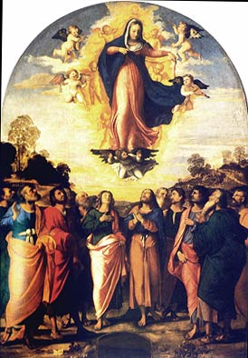

|

The Assumption of the Virgin, by Palma Vecchio |
|
Why the Sky? La Donna Alata means Woman with Wings. In Venetian art the sky is the seat of power, where the Virgin Mary, Aphrodite, the Sibyls live. Up is Good. Here Mary dangles her girdle to prove to Doubting Thomas that she is resurrected. By hanging out laundry, Venetian casalinghe (traditional housewives) make the sky their space. |
| Arts-Cape Home | About Manifold Laundry | Artist's Biography | To order a print | Home |